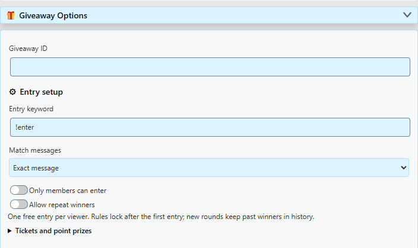
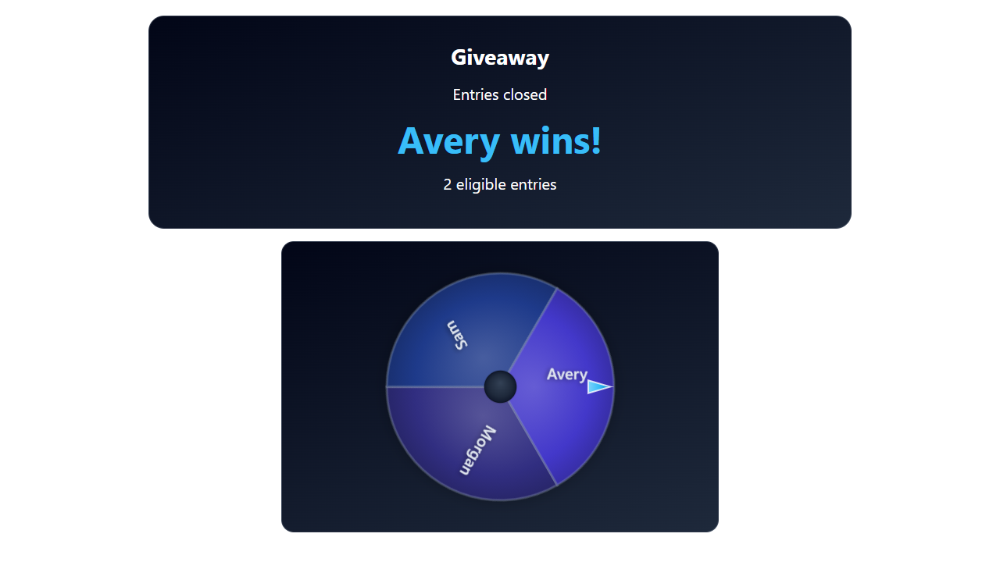

1. 找到抽奖工具
如果你已经能看到 抽奖工具, 报名设置，以及 运行抽奖，说明你已经找对了位置，无需再寻找其他抽奖弹出窗口。
否则，请打开 SSN 主设置菜单。使用浏览器扩展时，点击浏览器的扩展/拼图图标，然后选择 Social Stream Ninja。在桌面应用中，使用包含叠加层链接的 SSN 设置菜单。搜索 giveaway 并展开 抽奖选项。如果看到新手欢迎画面，请选择 切换到完整模式.
- 观众报名在正常捕获的聊天中
- 由你执行抽奖在 SSN 设置菜单中
- OBS 显示结果使用复制的显示链接
以下列内容开头的链接： https://socialstream.ninja/giveaway.html?session=... 会打开观众显示页面。如果链接中有 &managed 在该链接中时，你从 SSN 控制抽奖；显示页面没有报名或抽奖按钮。
2. 进行简单的免费抽奖
开始前，保持 SSN 启用并连接聊天来源。检查普通观众消息能否出现在 SSN 聊天停靠面板中。
- 保留基本设置。 将 抽奖 ID 作为
default（留空也表示默认）， 报名关键词 作为!enter，以及 消息匹配方式 作为 整条消息匹配。将 仅会员可报名 和 允许重复获胜 关闭。 - 检查票券和积分奖品。 普通免费抽奖请使用 轮次类型：抽奖, 每张票的积分：0, 每位获胜者的积分奖品：0，以及 奖品数量：1。此功能不需要忠诚度积分系统。
- 点击“开放报名”。 告诉观众：“输入
!enter，在聊天中报名抽奖。”观众在你正在捕获的聊天中报名，例如 YouTube 或 Twitch，无需抽奖链接。 - 检查报名情况。 点击 刷新状态 更新菜单中的计数，或 管理抽奖和历史记录 查看名字。重复输入
!enter不会让同一观众获得额外的免费报名次数。 - 点击“关闭报名”，然后点击“抽出获胜者”。 SSN 会从符合资格的报名中随机选择一份。菜单报告获胜者，已连接的显示页面展示同一结果。抽奖也会自动关闭报名。
- 如需再次抽奖，点击“新一轮”，然后点击“开放报名”。 新一轮的报名列表为空；观众必须重新报名。之前的结果会保留在历史记录中。


!enter ，在报名开放后发送，然后点击 刷新状态。聊天到达时，弹出菜单中的计数不会自动更新。状态也可能显示票券数量。每份免费报名算作一张票；票价设为零时，不会收取积分。
SSN 负责选出获胜者。如果奖品是礼物、游戏激活码或其他物品，需要由你自行安排交付。 积分奖品 专门用于发放 SSN 忠诚度积分。
3. 在 OBS 中显示抽奖
- 位于 展示，选择一个 抽奖显示: 获胜者卡片 直接显示结果； 姓名滚轴 会在揭晓前循环显示名字； 社群转盘 通过旋转转盘揭晓结果。
- 选择一个 样式、可选的 显示标题，以及 透明（OBS） 作为背景。 主题面板 会添加背景面板。
- 点击 预览显示 检查外观。它使用示例名字，不会开放报名、添加真实观众或执行你的实际抽奖。
- 点击 [复制链接] ，位于以下选项旁： 抽奖工具。在 OBS 中添加一个 浏览器来源 ，将链接粘贴到 URL 字段。起始宽度为 1280 ，高度为 720.
- 保持 SSN 运行，并使用其 开放报名, 关闭报名，以及 抽出获胜者 按钮。此受管理的显示页面不需要 OBS“交互”操作。



更改展示设置后重新复制链接 并替换 OBS 中的 URL。使用正常复制的链接，不要使用预览 URL。保留你自己的 SSN 菜单提供的会话和任何密码，以便显示页面连接到你的抽奖。
[编辑链接] 将现有叠加层 URL 加载到菜单的链接设置中。第一次抽奖不需要使用它。 [?] 会打开简短帮助文本。
报名设置的含义
| 设置 | 含义 |
|---|---|
| 抽奖 ID | 为当前控制的抽奖命名。使用 default 来运行一个抽奖。它与你的会话 ID 无关。多个抽奖需要不同的 ID 和相匹配的显示链接。 |
| 报名关键词 | 观众输入的内容，例如 !enter 或 !raffle。请告知观众你实际配置的关键词。 |
| 整条消息匹配 | 整条消息必须为 !enter，忽略大小写及首尾空格。 !enter please 不匹配。 |
| 关键词可在任意位置（独立词语） | 允许这样的消息： I'd like to join !enter please。关键词必须用空格分隔； !enter! 不是相同的关键词。 |
| 仅会员可报名 | 需要捕获的消息包含会员信息。开放式抽奖请关闭；它不表示“任何正在观看的人”或“任何关注者”。支持情况取决于聊天来源。 |
| 允许重复获胜 | 允许同一观众在当前轮次赢得多个奖品。关闭时，获胜者会从该轮符合资格的抽奖池中移除。新一轮允许之前的获胜者重新报名。 |
| 票券和积分奖品 | 可选的 SSN 忠诚度积分设置及其他游戏类型。免费抽奖请将费用和积分奖品保留为零。这些积分与 Twitch 频道积分分开。 |
| 奖品数量 | 该轮允许产生多少个结果。请在开放报名前设置。如果要抽出多个获胜者，请点击 抽出获胜者 ，每个奖品点击一次；这些抽奖之间不要创建新一轮。 |
在有人加入前设置报名规则。一旦有报名，修改菜单字段不会改变当前轮次的规则。要更改规则，请取消该轮、创建新一轮、完成配置，再次开放报名。管理器会显示该轮实际保存的规则。
免费报名按各聊天来源提供的身份追踪。同一个人在两个平台报名，不会自动识别为同一人。
按钮的作用
| 按钮 | 用于 |
|---|---|
| 开放报名 | 接受报名，或在尚未抽出任何获胜者前重新开放暂停的轮次。重新开放会保留现有报名，并且必须使用相同的已锁定规则。 |
| 关闭报名 | 停止接受新报名，保留当前抽奖池。 |
| 抽出获胜者 | 关闭报名并选出一位获胜者。必须至少有一份符合资格的报名。如果设置为一个奖品，该轮随后即告结束。 |
| 取消并退款 | 在抽奖前取消。所有预留的购票积分都会退回。此操作无法撤销已抽出的结果。 |
| 新一轮 | 以空抽奖池重新开始，并保留先前历史记录。报名初始为关闭状态。已预留积分的付费轮次必须先取消并退款。 |
| 刷新状态 | 读取当前计数和最新结果，不改变抽奖。 |
| 管理抽奖和历史记录 | 查看参与者和已保存的规则、在抽奖前移除报名、查看结果，或导出历史记录/备份。 |
如果出现问题
- 报名仍为零？ 点击 刷新状态。确认观众消息出现在 SSN 中、消息到达时已开放报名、关键词匹配，且未启用仅限会员。免费关键词抽奖的票价必须为零。同时进行的免费抽奖应使用不同关键词。
- 测试消息无法报名？ 机器人、私密、历史、重播和带有经济系统测试标记的消息会被排除。使用 预览显示 用于检查外观；要演练真实报名捕获，请在开放报名后通过已连接的聊天发送关键词。
- 显示页面只写着“等待抽奖”？ 保持 SSN 主机运行，使用从相同会话复制的链接，并点击 刷新状态。检查菜单和显示页面是否使用相同的抽奖 ID。预览 URL 只显示示例数据。
- 抽奖页面没有按钮？ 对于受管理的观众显示页面，这是预期行为。返回 抽奖选项 ，位于 SSN 中。
- 轮次已完成或规则被锁定？ 使用 新一轮 ，用于完成抽奖后。要放弃尚未抽出的轮次，请使用 取消并退款 ，然后再 新一轮.
- 重启了 SSN？ 已保存的轮次会保留在该本地浏览器/应用配置中；开放中的轮次会关闭以供检查。请使用相同会话，刷新状态，并在重新开放前检查。切换会话会选择另一组独立的抽奖。
准备使用付费票券、积分奖品、多个抽奖、Stream Deck 或 Event Flow？继续阅读 抽奖、票券和积分奖品.